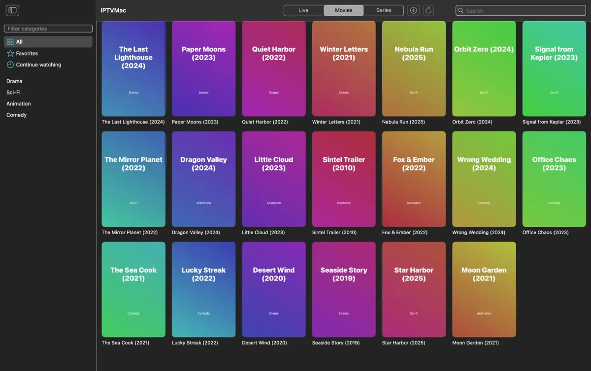

Mac
Apple Silicon (M1 ומעלה), macOS 14 ומעלה.
הורדת ה-DMGv0.9.3 · 16 MB
או התקנה מהטרמינל בשורה אחת:
curl -fsSL https://raw.githubusercontent.com/Goelir/IPTVMac/main/install.sh | bash - פותחים את IPTVMac.dmg וגוררים את סמל IPTVMac אל Applications.
- פותחים את האפליקציה ומוסיפים כניסת Xtream Codes או קישור M3U.
- זהו: האפליקציה מתעדכנת לבד.
חתום ב-Apple Developer ID ומאושר על ידי Apple (notarized), ולכן נפתח בלחיצה כפולה רגילה. הפקודה בשורה אחת עובדת לכל גרסה ובודקת בשבילך את החתימה ואת ה-SHA-256.